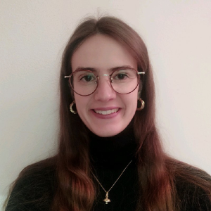

|

|
IRENE TANCA
Un aggettivo che mi descrive è curiosa. Le ie due grandi passioni sono lo sport e la lettura. Ho giocato per 12 anni a pallavolo e libri, articoli e podcast rispondono al mio bisogno di conoscenza. Sono sensibile alle tematiche ambientali e della sostenibilità.
Sono soccorritrice volontaria 118 in Emergenza Milano Soccorso, una onlus di Milano nord.
|
ESPERIENZE LAVORATIVE
ProntoPro | maggio 2021 - dicembre 2022
Content and Community Associate (feb. 2022 - presente)
Digital CRM Intern (mag. 2021 - feb. 2022)
- Pianificazione strategica e stesura delle newsletter rivolte sia ai clienti che ai professionisti iscritti alla piattaforma
- Analisi delle performance e relativa reportistica
- Gestione del gruppo Facebook riservato ai Professionisti
Marketing and communication Intern
Bosch Security and Safety Systems | aprile 2019 - aprile 2020
- Creazione di presentazioni e brochure
- Creazione e traduzione di contenuti per il canale LinkedIn e il
sito web (post, articoli)
- Pianificazione e monitoraggio di post LinkedIn e newsletter
- Gestione della piattaforma di CMS
Press Office Intern
LaPresse Spa | ottobre 2016 - febbraio 2017
- Redazione della rassegna stampa quotidiana e
monitoraggio dei siti Internet per la stessa
- Stesura di comunicati stampa per le riviste Cairo Editore e
alcuni canali del Gruppo Discovery (Real Time, TV8, DMAX)
ISTRUZIONE
Job Farm
Executive Master in Digital Marketing | maggio 2021 - luglio 2021
- Percorso di approfondimento su: Media Stategy - Press &
Digital; Social Advertising; Digital Advertising & Mobile
Marketing; E-commerce; Google Analytics; Economics and Data
Science, SEO, SEM, Social Media Marketing - Content Creation
Università Cattolica del Sacro Cuore
LM - Comunicazione per l'impresa, i media e le organizzazoni
complesse | settembre 2017 - maggio 2020
- Voto di laurea: 110/110 con Lode
- Titolo tesi: "Comunicare la sicurezza: il caso Bosch Security and
Safety Systems"
Università Cattolica del Sacro Cuore
LT - Linguaggi dei Media | settembre 2014 - ottobre 2017
- Voto di laurea: 110/110
- Titolo tesi: "Comunicare con i dati: un nuovo modo di
raccontare e visualizzare l'informazione nell'era digitale"
Liceo Scientifico Pozzomaggiore - I.I.S. G. Musinu
Liceo scientifico - indirizzo tradizionale | settembre 2009- settembre 2014
- Voto di diploma: 100/100
- Titolo tesina: "La sezione aurea"
ALTRE ESPERIENZE
- Borsa di studio Fondazione Bracco per la
frequentazione del corso Leadership e
genere, per una leadership responsabile e
inclusiva in collaborazione con Soroptimistic
e SDA Bocconi | maggio 2021
- TALENT ACADEMY 16 - Finalista:
Realizzazione di un progetto di
comunicazione per Borsa Italiana. Premio
per il miglior progetto creativo | giugno 2019
- Volontaria Bookcity in qualità di
responsabile dei volontari | 3 edizioni